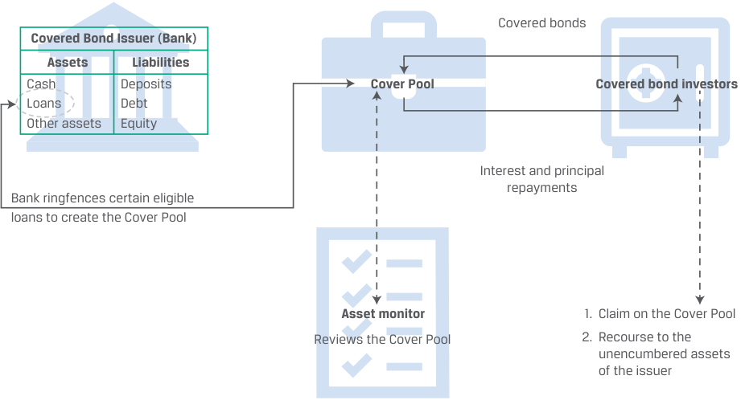
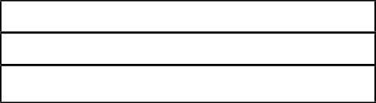
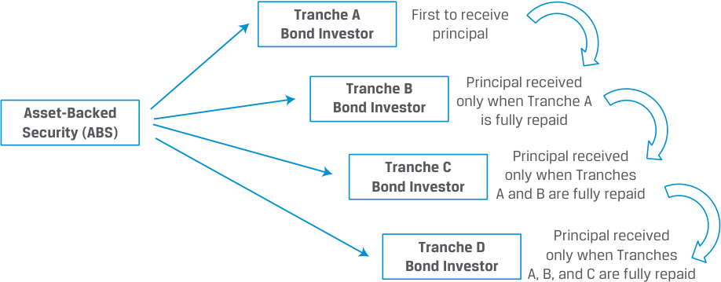

Learning Module 18 Asset-Backed Security (ABS) Instrument and Market Features - Part 1: Introduction
Volume 6: Fixed Income
Learning Module 18 Asset-Backed Security (ABS) Instrument and Market Features
Part 1/3: Introduction (PDF Pages 475–488)
Tập 6: Chứng Khoán Thu Nhập Cố Định (Fixed Income)
Học phần 18: Đặc Điểm Công Cụ và Thị Trường Chứng Khoán Đảm Bảo Bằng Tài Sản (ABS)
Phần 1/3: Giới thiệu (Trang PDF 475–488)
L E A R N I N G M O D U L E 18
H Ọ C P H Ầ N 18
Asset-Backed Security (ABS) Instrument and Market Features
Đặc Điểm Công Cụ và Thị Trường Chứng Khoán Đảm Bảo Bằng Tài Sản (Asset-Backed Security (ABS) Instrument and Market Features)
LEARNING OUTCOMES
MỤC TIÊU HỌC TẬP (LEARNING OUTCOMES)
| Mastery | The candidate should be able to: |
|---|---|
| describe characteristics and risks of covered bonds and how they differ from other asset-backed securities |
|
| describe typical credit enhancement structures used in securitizations |
|
| describe types and characteristics of non-mortgage asset-backed securities, including the cash flows and risks of each type |
|
| l describe collateralized debt obligations, including their cash flows and risks |
| Mức độ thành thạo | Ứng viên cần có khả năng: |
|---|---|
| Mô tả các đặc điểm và rủi ro của trái phiếu có bảo đảm (covered bonds) và cách chúng khác biệt với các chứng khoán đảm bảo bằng tài sản (asset-backed securities – ABS) khác | |
| Mô tả các cấu trúc tăng cường tín dụng (credit enhancement structures) điển hình được sử dụng trong các giao dịch chứng khoán hóa | |
| Mô tả các loại hình và đặc điểm của chứng khoán đảm bảo bằng tài sản phi thế chấp (non-mortgage asset-backed securities), bao gồm dòng tiền và rủi ro của từng loại | |
| Mô tả nghĩa vụ nợ có tài sản đảm bảo (collateralized debt obligations – CDO), bao gồm dòng tiền và rủi ro của chúng |
INTRODUCTION
GIỚI THIỆU (INTRODUCTION)
Prior Learning Modules have shown the funding technique of securitization can be backed by diverse types of assets, including loans and receivables as well as residential or commercial mortgages. A unifying principle in all asset-backed security (ABS) structures is that their underlying cash flows can be reconfigured into various tranches, each with its particular payment pattern to investors and associated risks. The advantage of this targeted partitioning includes a reduction in the variability of cash flows and the reallocation of risks, such as default and early repayment across specific tranches, with associated returns. Overall, ABS securitization provides risk transfer, flexibility to issuers and investors, and efficiency of capital allocation.
Các Học phần trước đã chỉ ra rằng kỹ thuật huy động vốn thông qua chứng khoán hóa có thể được đảm bảo bằng nhiều loại tài sản đa dạng, bao gồm các khoản vay và khoản phải thu cũng như các khoản vay thế chấp bất động sản nhà ở hoặc thương mại. Một nguyên tắc thống nhất trong tất cả các cấu trúc chứng khoán đảm bảo bằng tài sản (Asset-backed security – ABS) là dòng tiền cơ sở của chúng có thể được tái cấu trúc thành nhiều phần/lớp chứng khoán (tranches) khác nhau, mỗi lớp có mô hình thanh toán riêng biệt cho nhà đầu tư và đi kèm các rủi ro tương ứng. Ưu điểm của việc phân tách có mục tiêu này bao gồm việc làm giảm tính biến động của dòng tiền và tái phân bổ các rủi ro — chẳng hạn như rủi ro vỡ nợ (default) và rủi ro trả nợ sớm (early repayment) — qua các lớp chứng khoán cụ thể với mức tỷ suất sinh lợi tương ứng. Nhìn chung, chứng khoán hóa ABS mang lại sự chuyển giao rủi ro, tính linh hoạt cho tổ chức phát hành và nhà đầu tư, cũng như tính hiệu quả trong phân bổ vốn.
LEARNING MODULE OVERVIEW
TỔNG QUAN HỌC PHẦN (LEARNING MODULE OVERVIEW)
- Covered bonds are issued by financial institutions as senior debt obligations. Backed by a segregated pool of assets typically consisting of commercial or residential mortgages, or public sector assets, these assets remain on the issuer’s balance sheet.
- Trái phiếu có bảo đảm (Covered bonds) được phát hành bởi các định chế tài chính dưới dạng nghĩa vụ nợ ưu tiên cấp cao (senior debt obligations). Được đảm bảo bằng một danh mục tài sản tách biệt thường bao gồm các khoản thế chấp thương mại hoặc nhà ở, hoặc tài sản khu vực công, những tài sản này vẫn nằm lại trên bảng cân đối kế toán của tổ chức phát hành.
-
Non-mortgage ABS are securitizations that remove the pool of assets from the original issuer’s balance sheet. They are generally collateralized by non-amortizing loans, such as credit card receivables, that retain their original loan value during a specific period of their life before the stated maturity date, known as the lockout or revolving period. During this time, principal that is repaid is reinvested to replenish the collateral pool.
-
Collateralized debt obligation (CDO) is a generic term describing securitization backed by diversified collateral pools of non-mortgage debt (such as bonds or loans) that redistribute segmented cash flows to investors. The CDO’s tranches receive the cash flows according to an order of priority, with senior claims having lower bond-like payouts and junior claims receiving potentially higher but more variable returns.
-
The most common CDO structure is a collateralized loan obligation (CLO) and is subject to uniquely complex non-linear risks in cases of collateral defaults.
-
Credit tranching, which involves creating distinct senior and subordinated bond classes (“tranches”), offers credit protection for the more senior bond classes in a securitization. Senior bond classes are paid from the underlying asset pool before subordinated tranches; subordinated bond classes absorb any cash flow losses resulting from defaults in the asset pool before senior tranches.
-
Creating a set of bond classes allows investors to choose the level of risk, expected maturity, and the associated returns they prefer. Each bond class created in a securitization is typically rated based on both the quality of the underlying collateral and the seniority of the class.
-
Chứng khoán đảm bảo bằng tài sản phi thế chấp (Non-mortgage ABS) là các giao dịch chứng khoán hóa loại bỏ danh mục tài sản khỏi bảng cân đối kế toán của tổ chức phát hành ban đầu. Chúng thường được thế chấp bằng các khoản vay không khấu hao gốc định kỳ (non-amortizing loans), chẳng hạn như các khoản phải thu thẻ tín dụng (credit card receivables), vốn duy trì nguyên giá trị khoản vay ban đầu trong suốt một giai đoạn cụ thể của vòng đời trước ngày đáo hạn quy định, được gọi là giai đoạn khóa hoặc giai đoạn quay vòng (lockout or revolving period). Trong thời gian này, nợ gốc được hoàn trả sẽ được tái đầu tư để bổ sung làm đầy lại danh mục tài sản thế chấp (collateral pool).
-
Nghĩa vụ nợ có tài sản đảm bảo (Collateralized debt obligation – CDO) là một thuật ngữ chung mô tả giao dịch chứng khoán hóa được đảm bảo bằng các danh mục tài sản thế chấp đa dạng gồm các khoản nợ phi thế chấp (chẳng hạn như trái phiếu hoặc các khoản vay) nhằm phân phối lại các dòng tiền đã được phân đoạn cho các nhà đầu tư. Các lớp chứng khoán (tranches) của CDO nhận dòng tiền theo một thứ tự ưu tiên, trong đó các quyền đòi nợ cấp cao (senior claims) nhận khoản thanh toán thấp hơn tương tự như trái phiếu và các quyền đòi nợ cấp thấp (junior claims) nhận tỷ suất sinh lợi tiềm năng cao hơn nhưng biến động nhiều hơn.
-
Cấu trúc CDO phổ biến nhất là nghĩa vụ khoản vay có tài sản đảm bảo (Collateralized loan obligation – CLO) và chịu các rủi ro phi tuyến tính (non-linear risks) phức tạp đặc thù trong trường hợp tài sản thế chấp bị vỡ nợ.
-
Phân lớp tín dụng (Credit tranching), bao gồm việc tạo ra các hạng trái phiếu cấp cao và cấp thấp riêng biệt ("các lớp chứng khoán – tranches"), mang lại sự bảo vệ tín dụng cho các hạng trái phiếu cấp cao hơn trong một giao dịch chứng khoán hóa. Các hạng trái phiếu cấp cao (senior bond classes) được thanh toán từ danh mục tài sản cơ sở trước các lớp cấp thấp (subordinated tranches); các hạng trái phiếu cấp thấp hấp thụ bất kỳ khoản tổn thất dòng tiền nào phát sinh từ các vụ vỡ nợ trong danh mục tài sản trước các lớp cấp cao.
-
Việc tạo ra một tập hợp các hạng trái phiếu cho phép các nhà đầu tư lựa chọn mức độ rủi ro, kỳ hạn dự kiến và tỷ suất sinh lợi đi kèm mà họ ưa thích. Mỗi hạng trái phiếu được tạo ra trong một giao dịch chứng khoán hóa thường được xếp hạng tín nhiệm dựa trên cả chất lượng của tài sản thế chấp cơ sở lẫn mức độ ưu tiên (seniority) của hạng trái phiếu đó.
LEARNING MODULE SELF-ASSESSMENT
TỰ ĐÁNH GIÁ HỌC PHẦN (LEARNING MODULE SELF-ASSESSMENT)
- Which of the following types of descriptive information is typically excluded from an ABS term sheet?
-
A. Conditions for early amortization
-
B. Market values of the tranche notes
-
C. Aggregate amount of collateral pool assets
-
Solution:
- Loại thông tin mô tả nào sau đây thường không được đưa vào bản điều khoản tóm tắt (term sheet) của một ABS?
-
A. Các điều kiện để khấu hao gốc sớm (Conditions for early amortization)
-
B. Giá trị thị trường của các kỳ phiếu thuộc từng lớp chứng khoán (Market values of the tranche notes)
-
C. Tổng giá trị tài sản của danh mục tài sản thế chấp (Aggregate amount of collateral pool assets)
-
Lời giải (Solution):
The correct answer is B. The term sheet typically provides the face value of the tranche notes at the time of the transaction, not their market value. Both A and C are incorrect as these items are typically included in the term sheet.
Đáp án đúng là B. Bản điều khoản tóm tắt (term sheet) thường cung cấp mệnh giá (face value) của các kỳ phiếu thuộc từng lớp chứng khoán tại thời điểm giao dịch, chứ không phải giá trị thị trường của chúng. Cả A và C đều không đúng vì những mục này thường được đưa vào trong bản điều khoản tóm tắt.
- After the lockout period for ABS with non-amortizing collateral, how are the cash flows for loan repayments directed?
-
A. All of the principal is reinvested to acquire additional loans.
-
B. Part of the principal is reinvested if the collateral pool is depleted.
-
C. No principal is reinvested, and all is distributed to different tranches.
-
Solution:
- Sau giai đoạn khóa (lockout period) đối với ABS có tài sản thế chấp không khấu hao gốc (non-amortizing collateral), dòng tiền từ việc hoàn trả nợ gốc của khoản vay được điều hướng như thế nào?
-
A. Toàn bộ tiền gốc được tái đầu tư để mua thêm các khoản vay bổ sung.
-
B. Một phần tiền gốc được tái đầu tư nếu danh mục tài sản thế chấp bị suy giảm.
-
C. Không có khoản tiền gốc nào được tái đầu tư, và toàn bộ được phân phối cho các lớp chứng khoán (tranches) khác nhau.
-
Lời giải (Solution):
The correct answer is C. When the lockout period is over and the amortization period starts, any principal that is repaid will not be reinvested in new loans but will be distributed to the different tranches.
Đáp án đúng là C. Khi giai đoạn khóa (lockout period) kết thúc và giai đoạn khấu hao hoàn trả gốc (amortization period) bắt đầu, bất kỳ khoản tiền gốc nào được hoàn trả sẽ không được tái đầu tư vào các khoản vay mới mà sẽ được phân phối cho các lớp chứng khoán khác nhau.
- The prevailing CDO structure is the: A. CLO. B. CMO. C. Structured finance CDO.
- Cấu trúc CDO thịnh hành nhất hiện nay là: - A. CLO. - B. CMO. - C. CDO tài chính có cấu trúc (Structured finance CDO).
Solution: The correct answer is A. Collateralized loan obligations (CLOs) have a collateral pool composed of loans. B is incorrect because while similar, CMOs are based on mortgages. C is incorrect because it is based on a portfolio of other CDOs.
Lời giải (Solution): Đáp án đúng là A. Nghĩa vụ khoản vay có tài sản đảm bảo (Collateralized loan obligations – CLO) có danh mục tài sản thế chấp bao gồm các khoản vay. B không đúng vì mặc dù tương tự, nhưng CMO dựa trên các khoản vay thế chấp bất động sản (mortgages). C không đúng vì nó dựa trên một danh mục gồm các CDO khác.
- Which of the following statements about CLOs is accurate? A. The CLO replicates the firm’s capital structure. B. Purchases of a CLO’s collateral are funded by issuing equity. C. A CLO’s junior tranche earns a potentially higher yield than comparable corporate bonds.
- Phát biểu nào sau đây về CLO là chính xác? - A. CLO mô phỏng lại cấu trúc vốn của doanh nghiệp (replicates the firm's capital structure). - B. Việc mua tài sản thế chấp của một CLO được tài trợ bằng cách phát hành cổ phiếu. - C. Lớp chứng khoán thứ cấp (junior tranche) của một CLO mang lại lợi suất tiềm năng cao hơn so với các trái phiếu doanh nghiệp tương đương.
Solution: The correct answer is A. Fundamentally, a CLO replicates the capital structure of the firm. B is incorrect because CLO collateral purchases rely on funds obtained from the issuance of debt. C is incorrect because it is the senior of mezzanine tranches that earn a potentially higher yield than comparable corporate bonds.
Lời giải (Solution): Đáp án đúng là A. Về cơ bản, một CLO mô phỏng lại cấu trúc vốn của doanh nghiệp. B không đúng vì việc mua tài sản thế chấp của CLO dựa vào nguồn vốn thu được từ việc phát hành các nghĩa vụ nợ. C không đúng vì chính các lớp chứng khoán cấp cao (senior) hoặc trung gian (mezzanine) mới là các lớp mang lại lợi suất tiềm năng cao hơn so với các trái phiếu doanh nghiệp tương đương (trong khi lớp thứ cấp/vốn cổ phần mang rủi ro và tỷ suất sinh lợi giống như cổ phiếu).
- Which of the following aspects of their transaction structures is most likely shared by solar ABS, CLOs, and covered bonds? A. A pre-funding period B. An unstable collateral pool C. A diversity of default exposures
- Khía cạnh nào sau đây trong cấu trúc giao dịch nhiều khả năng nhất là điểm chung giữa ABS điện mặt trời (solar ABS), CLO và trái phiếu có bảo đảm (covered bonds)? - A. Có giai đoạn cấp vốn trước (pre-funding period) - B. Danh mục tài sản thế chấp không cố định (unstable collateral pool) - C. Đa dạng các mức độ tiếp xúc rủi ro vỡ nợ (diversity of default exposures)
Solution: The correct answer is B. All these ABS lack a stable initial asset pool and require ongoing collateral management. A is incorrect because a pre-funding period is used by solar ABS post transaction to acquire additional qualifying assets that meet certain eligibility criteria. C is incorrect because covered bonds have only one bond class with its associated default exposure in its cover pool.
Lời giải (Solution): Đáp án đúng là B. Tất cả các chứng khoán ABS này đều không có một danh mục tài sản ban đầu cố định tĩnh mà đòi hỏi phải có sự quản lý tài sản thế chấp liên tục (ongoing collateral management). A không đúng vì giai đoạn cấp vốn trước (pre-funding period) được sử dụng bởi ABS điện mặt trời sau khi đóng giao dịch để mua thêm các tài sản đủ điều kiện đáp ứng các tiêu chí hợp lệ nhất định. C không đúng vì trái phiếu có bảo đảm chỉ có một hạng trái phiếu duy nhất với mức độ tiếp xúc rủi ro vỡ nợ đi kèm trong danh mục bảo đảm (cover pool) của nó.
- Which internal credit enhancement involves creating bond classes that differ in how they share any losses resulting from defaults in the collateral pool? A. Subordination B. Overcollateralization C. Cash collateral accounts
- Biện pháp tăng cường tín dụng nội bộ (internal credit enhancement) nào bao gồm việc tạo ra các hạng trái phiếu khác nhau về cách thức chia sẻ các khoản lỗ phát sinh từ việc vỡ nợ trong danh mục tài sản thế chấp? - A. Phân tầng thứ bậc ưu tiên (Subordination) - B. Thế chấp vượt mức (Overcollateralization) - C. Tài khoản tiền mặt thế chấp (Cash collateral accounts)
Solution:
Lời giải (Solution):
The correct answer is A. Subordination or credit tranching in the securitization transaction involves creating more than one bond class or tranche, and the bond classes differ in how they share any losses resulting from defaults in the collateral pool. B is incorrect because overcollateralization is an internal credit enhancement in which the collateral underlying the transaction is larger than the face value of the issued bonds, so that even if defaults are in the pool, the transaction has sufficient cushion to continue paying principal
Đáp án đúng là A. Phân tầng thứ bậc ưu tiên (subordination) hay phân lớp tín dụng (credit tranching) trong giao dịch chứng khoán hóa bao gồm việc tạo ra nhiều hơn một hạng trái phiếu hoặc lớp chứng khoán (tranche), và các hạng trái phiếu này khác nhau về cách thức chia sẻ bất kỳ khoản lỗ nào phát sinh từ các vụ vỡ nợ trong danh mục tài sản thế chấp. B không đúng vì thế chấp vượt mức (overcollateralization) là một biện pháp tăng cường tín dụng nội bộ trong đó tài sản thế chấp cơ sở của giao dịch lớn hơn mệnh giá của các trái phiếu được phát hành, sao cho ngay cả khi có các vụ vỡ nợ xảy ra trong danh mục, giao dịch vẫn có đủ tấm đệm dự phòng (cushion) để tiếp tục thanh toán nợ gốc
and interest payments on the bonds. C is incorrect because it is a type of external, not internal, credit enhancement.
và tiền lãi cho các trái phiếu. C không đúng vì đây là một loại hình tăng cường tín dụng bên ngoài (external), chứ không phải nội bộ (internal).
- Which of the following statements about covered bonds is incorrect ?
-
A. The LTV on the mortgages included in the transactions must meet certain standards to be eligible for inclusion in the pool.
-
B. Covered bond transactions typically involve collateral underlying the transaction that is less than the face value of the issued bonds.
-
C. Redemption regimes exist to align the covered bond’s cash flows with the original maturity schedule in the event of default of a covered bond’s sponsor.
- Phát biểu nào sau đây về trái phiếu có bảo đảm (covered bonds) là không đúng?
-
A. Tỷ lệ khoản vay trên giá trị tài sản (Loan-to-value – LTV) của các khoản thế chấp được đưa vào giao dịch phải đáp ứng các tiêu chuẩn nhất định để đủ điều kiện được đưa vào danh mục.
-
B. Các giao dịch trái phiếu có bảo đảm thường có tài sản thế chấp cơ sở của giao dịch nhỏ hơn mệnh giá của các trái phiếu được phát hành.
-
C. Các cơ chế thanh toán hoàn trả gốc (redemption regimes) tồn tại nhằm giúp dòng tiền của trái phiếu có bảo đảm bám sát với lịch trình đáo hạn ban đầu trong trường hợp tổ chức tài trợ (sponsor) của trái phiếu có bảo đảm bị vỡ nợ.
Solution:
Lời giải (Solution):
The correct answer is B. Covered bond transactions typically involve collateral underlying the transaction, which exceeds the face value of the issued bonds referred to as overcollateralization. A is incorrect because it is a correct statement. The loan to value (LTV) on the mortgages included in the transactions must meet certain standards to be eligible for inclusion in the pool. If a mortgage fails to meet the LTV criteria, it is replaced with another mortgage that meets the criteria. C is incorrect because it is a correct statement. Redemption regimes exist to align the covered bond’s cash flows as closely as possible with the original maturity schedule in the event of default of a covered bond’s financial sponsor.
Đáp án đúng là B. Các giao dịch trái phiếu có bảo đảm thường có tài sản thế chấp cơ sở của giao dịch vượt quá mệnh giá của các trái phiếu được phát hành, được gọi là thế chấp vượt mức (overcollateralization). A không đúng vì đây là một phát biểu đúng. Tỷ lệ khoản vay trên giá trị tài sản (LTV) của các khoản thế chấp được đưa vào giao dịch phải đáp ứng các tiêu chuẩn nhất định để đủ điều kiện được đưa vào danh mục. Nếu một khoản thế chấp không đáp ứng tiêu chí LTV, nó sẽ được thay thế bằng một khoản thế chấp khác đáp ứng tiêu chí đó. C không đúng vì đây là một phát biểu đúng. Các cơ chế thanh toán hoàn trả gốc (redemption regimes) tồn tại nhằm giúp dòng tiền của trái phiếu có bảo đảm bám sát nhất có thể với lịch trình đáo hạn ban đầu trong trường hợp tổ chức tài chính tài trợ của trái phiếu có bảo đảm bị vỡ nợ.
- Which of the following bonds experiences a bond default and accelerated bond payments if payments are not made according to the original schedule?
-
A. Soft-bullet covered bonds
-
B. Hard-bullet covered bonds
-
C. Conditional pass-through covered bonds
- Loại trái phiếu nào sau đây sẽ xảy ra sự kiện vỡ nợ trái phiếu (bond default) và đẩy nhanh việc thanh toán trái phiếu (accelerated bond payments) nếu các khoản thanh toán không được thực hiện theo đúng lịch trình ban đầu?
-
A. Trái phiếu có bảo đảm trả gốc một lần linh hoạt (Soft-bullet covered bonds)
-
B. Trái phiếu có bảo đảm trả gốc một lần cố định (Hard-bullet covered bonds)
-
C. Trái phiếu có bảo đảm chuyển tiếp dòng tiền có điều kiện (Conditional pass-through covered bonds)
Solution:
Lời giải (Solution):
The correct answer is B. For hard-bullet covered bonds, if payments do not occur according to the original schedule, a bond default is triggered and bond payments are accelerated. A is incorrect because soft-bullet covered bonds delay the bond default and payment acceleration of bond cash flows until a new final maturity date, which is usually up to a year after the original maturity date. C is incorrect because conditional pass-through covered bonds convert to pass-through securities after the original maturity date if all bond payments have not been made.
Đáp án đúng là B. Đối với trái phiếu có bảo đảm trả gốc một lần cố định (hard-bullet covered bonds), nếu các khoản thanh toán không diễn ra theo đúng lịch trình ban đầu, sự kiện vỡ nợ trái phiếu sẽ bị kích hoạt và các khoản thanh toán trái phiếu sẽ bị buộc đẩy nhanh tiến độ (accelerated). A không đúng vì trái phiếu có bảo đảm trả gốc một lần linh hoạt (soft-bullet covered bonds) trì hoãn việc tuyên bố vỡ nợ trái phiếu và việc đẩy nhanh tiến độ thanh toán dòng tiền trái phiếu cho đến một ngày đáo hạn cuối cùng mới, thường là lên đến một năm sau ngày đáo hạn ban đầu. C không đúng vì trái phiếu có bảo đảm chuyển tiếp dòng tiền có điều kiện (conditional pass-through covered bonds) sẽ chuyển đổi thành chứng khoán chuyển tiếp dòng tiền (pass-through securities) sau ngày đáo hạn ban đầu nếu tất cả các khoản thanh toán trái phiếu vẫn chưa được thực hiện xong.
2 COVERED BONDS
2 TRÁI PHIẾU CÓ BẢO ĐẢM (COVERED BONDS)
describe characteristics and risks of covered bonds and how they differ from other asset-backed securities
Mục tiêu học tập: Mô tả các đặc điểm và rủi ro của trái phiếu có bảo đảm (covered bonds) và cách chúng khác biệt với các chứng khoán đảm bảo bằng tài sản (asset-backed securities) khác.
Covered bonds, which we touched on in earlier readings, are senior debt obligations issued by a financial institution and backed by a segregated pool of assets that typically consist of commercial or residential mortgages, or public sector assets. Covered bonds that are backed by ships and commercial aircraft have also been issued.
Trái phiếu có bảo đảm (Covered bonds), mà chúng ta đã đề cập sơ lược trong các bài đọc trước, là các nghĩa vụ nợ ưu tiên cấp cao (senior debt obligations) được phát hành bởi một định chế tài chính và được đảm bảo bằng một danh mục tài sản tách biệt (segregated pool of assets) thường bao gồm các khoản vay thế chấp thương mại hoặc nhà ở, hoặc các tài sản khu vực công. Trái phiếu có bảo đảm được thế chấp bằng tàu biển và máy bay thương mại cũng đã từng được phát hành.
The covered bond (or Pfandbrief in German) originated over 250 years ago in Prussia and has been adopted by issuers in Europe, Asia, and Australia. Each country or jurisdiction specifies eligible collateral and structures permissible in the covered bond market, and the European Union is taking steps to harmonize these elements among its member states. Exhibit 1 provides a typical structure for a covered bond transaction.
Trái phiếu có bảo đảm (hay Pfandbrief trong tiếng Đức) có nguồn gốc từ hơn 250 năm trước tại Phổ (Prussia) và đã được áp dụng bởi các tổ chức phát hành tại châu Âu, châu Á và Úc. Mỗi quốc gia hoặc khu vực tài phán quy định cụ thể các loại tài sản thế chấp hợp lệ (eligible collateral) và các cấu trúc được phép sử dụng trên thị trường trái phiếu có bảo đảm, và Liên minh Châu Âu (EU) đang thực hiện các bước để hài hòa hóa những yếu tố này giữa các quốc gia thành viên. Bảng minh họa 1 (Exhibit 1) cung cấp một cấu trúc điển hình cho một giao dịch trái phiếu có bảo đảm.
Exhibit 1: Covered Bond Transaction Structure
Bảng minh họa 1: Cấu trúc Giao dịch Trái phiếu Có bảo đảm (Exhibit 1: Covered Bond Transaction Structure)

Chú thích hình ảnh: - Tổ chức phát hành Trái phiếu có bảo đảm – Ngân hàng (Covered Bond Issuer – Bank): - Tài sản (Assets): Tiền mặt (Cash), Các khoản vay (Loans), Tài sản khác (Other assets) | Nguồn vốn (Liabilities): Tiền gửi (Deposits), Nợ (Debt), Vốn chủ sở hữu (Equity). - Ngân hàng khoanh vùng tách biệt (ringfences) một số khoản vay hợp lệ nhất định để tạo thành Danh mục Bảo đảm (Cover Pool). - Giám sát viên tài sản (Asset monitor): Rà soát Danh mục Bảo đảm (Reviews the Cover Pool). - Phát hành Trái phiếu có bảo đảm (Covered bonds) và trả Tiền lãi và hoàn trả nợ gốc (Interest and principal repayments) cho Nhà đầu tư trái phiếu có bảo đảm (Covered bond investors). - Nhà đầu tư có quyền truy đòi kép: (1) Quyền đòi nợ đối với Danh mục Bảo đảm (Claim on the Cover Pool); (2) Quyền truy đòi đối với các tài sản không bị cầm cố/thế chấp của tổ chức phát hành (Recourse to the unencumbered assets of the issuer).
Covered bonds are similar to ABS. However, the loans remain on the issuer’s balance sheet and are ringfenced into a separate cover pool. The investors in the covered bonds have dual recourse in case of bankruptcy: first on the ringfenced loans in the cover pool that underlie the covered bond transaction, and second on the unencumbered assets of the issuing institution.
Trái phiếu có bảo đảm tương tự như ABS. Tuy nhiên, các khoản vay vẫn nằm trên bảng cân đối kế toán của tổ chức phát hành và được khoanh vùng tách biệt (ringfenced) vào một danh mục bảo đảm (cover pool) riêng biệt. Các nhà đầu tư nắm giữ trái phiếu có bảo đảm có quyền truy đòi kép (dual recourse) trong trường hợp phá sản: thứ nhất là đối với các khoản vay đã được khoanh vùng trong danh mục bảo đảm làm cơ sở cho giao dịch trái phiếu có bảo đảm, và thứ hai là đối với các tài sản chưa bị cầm cố/thế chấp (unencumbered assets) của định chế phát hành.
Covered bond transactions financing environmental remediation projects and investments in renewable energy production and infrastructure are increasingly popular. The cover pools for these green covered bonds are largely made up of mortgages to green buildings, which can be identified through various green building certification standards.
Các giao dịch trái phiếu có bảo đảm tài trợ cho các dự án cải tạo môi trường và đầu tư vào sản xuất năng lượng tái tạo cũng như cơ sở hạ tầng đang ngày càng trở nên phổ biến. Danh mục bảo đảm cho những trái phiếu có bảo đảm xanh (green covered bonds) này chủ yếu được tạo thành từ các khoản vay thế chấp đối với các tòa nhà xanh, vốn có thể được xác định thông qua các tiêu chuẩn chứng nhận công trình xanh khác nhau.
Typical covered bond terms issued by Commercial Finance Partners are found in Exhibit 2. The mortgages underlying the transaction remain on its balance sheet.
Các điều khoản điển hình của trái phiếu có bảo đảm do Commercial Finance Partners phát hành được trình bày trong Bảng minh họa 2 (Exhibit 2). Các khoản vay thế chấp cơ sở của giao dịch vẫn nằm trên bảng cân đối kế toán của tổ chức này.
Exhibit 2: Covered Bond Term Sheet
Bảng minh họa 2: Bản Điều khoản Tóm tắt Trái phiếu Có bảo đảm (Exhibit 2: Covered Bond Term Sheet)
| Issue of EUR30 Million 2.00% Prospectus Summary |
|
|---|---|
| Issuer: | Commercial Finance Partners AG |
| Issue Size: | EUR30,000,000 |
| Tranche Size: | EUR30,000,000 |
| Interest Rate: | 2.00%, payable annually on June 30. |
| Đợt phát hành 30 Triệu EUR Lãi suất 2,00% – Tóm tắt Bản cáo bạch (Issue of EUR30 Million 2.00% Prospectus Summary) | |
|---|---|
| Tổ chức phát hành (Issuer): | Commercial Finance Partners AG |
| Quy mô phát hành (Issue Size): | 30.000.000 EUR |
| Quy mô lớp chứng khoán (Tranche Size): | 30.000.000 EUR |
| Lãi suất (Interest Rate): | 2,00%, thanh toán hàng năm vào ngày 30 tháng 6. |
| Settlement Date: | [T + 3 Business Days] |
|---|---|
| Maturity Date: | [Twenty Years from Settlement Date] |
| The Collateral: | Security in a pool of prime, fully amortizing mortgages. |
| h LTV Cut-off: |
80% |
| f Format: |
Soft bullet |
| Ngày thanh toán giao dịch (Settlement Date): | [T + 3 Ngày làm việc] |
| Ngày đáo hạn (Maturity Date): | [Hai mươi năm kể từ Ngày thanh toán giao dịch] |
| Tài sản thế chấp (The Collateral): | Quyền bảo đảm trong một danh mục các khoản thế chấp chất lượng cao (prime), trả góp khấu hao gốc toàn phần (fully amortizing). |
| Ngưỡng giới hạn LTV (LTV Cut-off): | 80% |
| Định dạng (Format): | Trả gốc một lần linh hoạt (Soft bullet) |
Covered bonds usually consist of one bond class per cover pool. Another important feature lies in the dynamic nature of the cover pool. The assets in the pool are monitored by a third party for performance and adherence to underwriting standards. Moreover, the covered bond issuer must replace any prepaid or non-performing assets (i.e., assets that do not generate the promised cash flows) to ensure sufficient cash flows until the maturity of the covered bond.
Trái phiếu có bảo đảm thường chỉ bao gồm một hạng trái phiếu duy nhất cho mỗi danh mục bảo đảm (cover pool). Một đặc điểm quan trọng khác nằm ở tính chất linh hoạt (dynamic nature) của danh mục bảo đảm. Các tài sản trong danh mục được giám sát bởi một bên thứ ba về hiệu quả hoạt động và sự tuân thủ các tiêu chuẩn thẩm định bảo lãnh (underwriting standards). Hơn nữa, tổ chức phát hành trái phiếu có bảo đảm phải thay thế bất kỳ tài sản nào bị trả nợ trước hạn hoặc không hoạt động hiệu quả / nợ xấu (non-performing assets — tức là các tài sản không tạo ra dòng tiền như đã cam kết) nhằm đảm bảo đủ dòng tiền cho đến khi trái phiếu có bảo đảm đáo hạn.
Covered bonds offer two additional tools to mitigate the risks of investors. First, covered bond transactions typically involve collateral underlying the transaction which exceeds the face value of the issued bonds, referred to as overcollateralization . For instance, Germany requires that all covered loan collateral pools are overcollateralized by at least 2% of the economic value of the outstanding covered bonds and some German issuers voluntarily overcollateralize their covered bond issues. Second, the loan to value (LTV) on the mortgages included in the transactions must meet certain standards to be eligible for inclusion in the pool. If a mortgage fails to meet the LTV criteria, it is replaced with another mortgage that meets the criteria.
Trái phiếu có bảo đảm cung cấp thêm hai công cụ bổ sung để giảm thiểu rủi ro cho các nhà đầu tư. Thứ nhất, các giao dịch trái phiếu có bảo đảm thường có tài sản thế chấp cơ sở của giao dịch vượt quá mệnh giá của các trái phiếu được phát hành, được gọi là thế chấp vượt mức (overcollateralization). Chẳng hạn, Đức yêu cầu tất cả các danh mục tài sản thế chấp của khoản vay có bảo đảm phải được thế chấp vượt mức ít nhất 2% giá trị kinh tế của số trái phiếu có bảo đảm đang lưu hành, và một số tổ chức phát hành của Đức còn tự nguyện thế chấp vượt mức cao hơn cho các đợt phát hành trái phiếu có bảo đảm của mình. Thứ hai, tỷ lệ khoản vay trên giá trị tài sản (Loan-to-value – LTV) của các khoản thế chấp được đưa vào giao dịch phải đáp ứng các tiêu chuẩn nhất định để đủ điều kiện được đưa vào danh mục. Nếu một khoản thế chấp không đáp ứng tiêu chí LTV, nó sẽ được thay thế bằng một khoản thế chấp khác đáp ứng tiêu chí đó.
Redemption regimes exist to align the covered bond’s cash flows as closely as possible with the original maturity schedule in the event of default of a covered bond’s financial sponsor. For example, in the case of hard-bullet covered bonds , if payments do not occur according to the original schedule, a bond default is triggered and bond payments are accelerated. Soft-bullet covered bonds delay the bond default and payment acceleration of bond cash flows until a new final maturity date, which is usually up to a year after the original maturity date. Conditional pass-through covered bonds , in contrast, convert to pass-through securities after the original maturity date if all bond payments have not yet been made.
Các cơ chế thanh toán hoàn trả gốc (redemption regimes) tồn tại nhằm giúp dòng tiền của trái phiếu có bảo đảm bám sát nhất có thể với lịch trình đáo hạn ban đầu trong trường hợp tổ chức tài chính tài trợ của trái phiếu có bảo đảm bị vỡ nợ. Ví dụ, trong trường hợp trái phiếu có bảo đảm trả gốc một lần cố định (hard-bullet covered bonds), nếu các khoản thanh toán không diễn ra theo đúng lịch trình ban đầu, sự kiện vỡ nợ trái phiếu sẽ bị kích hoạt và các khoản thanh toán trái phiếu sẽ bị buộc đẩy nhanh tiến độ (accelerated). Trái phiếu có bảo đảm trả gốc một lần linh hoạt (Soft-bullet covered bonds) trì hoãn việc tuyên bố vỡ nợ trái phiếu và việc đẩy nhanh tiến độ thanh toán dòng tiền trái phiếu cho đến một ngày đáo hạn cuối cùng mới, thường là lên đến một năm sau ngày đáo hạn ban đầu. Ngược lại, trái phiếu có bảo đảm chuyển tiếp dòng tiền có điều kiện (Conditional pass-through covered bonds) sẽ chuyển đổi thành chứng khoán chuyển tiếp dòng tiền (pass-through securities) sau ngày đáo hạn ban đầu nếu tất cả các khoản thanh toán trái phiếu vẫn chưa được thực hiện xong.
Covered bonds have remained a relatively stable and reliable source of funding over time because of their dual recourse nature, strict eligibility criteria, dynamic cover pool, and redemption regimes in the event of sponsor default. As a result, covered bonds usually carry lower credit risks and offer lower yields than otherwise similar ABS.
Trái phiếu có bảo đảm vẫn luôn là một nguồn huy động vốn tương đối ổn định và đáng tin cậy theo thời gian nhờ bản chất quyền truy đòi kép (dual recourse nature), tiêu chí xét duyệt hợp lệ nghiêm ngặt, danh mục bảo đảm linh hoạt, và các cơ chế thanh toán hoàn trả gốc trong trường hợp tổ chức tài trợ vỡ nợ. Kết quả là, trái phiếu có bảo đảm thường mang rủi ro tín dụng thấp hơn và có mức lợi suất thấp hơn so với các chứng khoán ABS tương tự.
EXAMPLE 1
VÍ DỤ 1 (EXAMPLE 1)
Comparing Covered Bonds and ABS at Banks
So sánh Trái phiếu Có bảo đảm và ABS tại các Ngân hàng (Comparing Covered Bonds and ABS at Banks)
“Ultimately, covered bonds and ABS are complements, not substitutes. ABS are a vehicle for packaging and selling exposure to private credit risk, with the promise of the higher returns that holding such risk entails. Covered bonds are a means for banks to raise long-term funding at a lower cost than if they issued unsecured debt. The assets underlying a covered bond simply enhance the issuer’s promise to pay back the loan and are not intended to offer exposure to the underlying pool of assets. “These differences between the two instruments are reflected in their payment structure: ABS typically pay floating interest rates and pass through any early payments; covered bonds typically pay a fixed interest rate and mature on a fixed date, like any other type of bond.
"Xét cho cùng, trái phiếu có bảo đảm và ABS là những công cụ bổ sung cho nhau (complements), chứ không phải thay thế cho nhau (substitutes). ABS là một phương tiện để đóng gói và bán đi mức độ tiếp xúc với rủi ro tín dụng tư nhân, đi kèm hứa hẹn về mức tỷ suất sinh lợi cao hơn mà việc nắm giữ rủi ro đó mang lại. Trái phiếu có bảo đảm là một phương tiện giúp các ngân hàng huy động nguồn vốn dài hạn với chi phí thấp hơn so với việc phát hành nợ không có bảo đảm (unsecured debt). Các tài sản cơ sở của một trái phiếu có bảo đảm đơn thuần chỉ củng cố thêm lời hứa hoàn trả khoản vay của tổ chức phát hành chứ không nhằm mục đích cung cấp sự tiếp xúc trực tiếp với danh mục tài sản cơ sở đó. Những sự khác biệt này giữa hai công cụ được phản ánh trong cấu trúc thanh toán của chúng: ABS thường trả lãi suất thả nổi và chuyển tiếp bất kỳ khoản trả nợ sớm nào; trái phiếu có bảo đảm thường trả lãi suất cố định và đáo hạn vào một ngày cố định, giống như bất kỳ loại trái phiếu thông thường nào khác.
“Although there may be disadvantages to banks selling the loans that they originate, there are also advantages. Securitization increases the financial system’s capacity to lend in a way that covered bonds do not. By moving loans off the originating bank’s balance sheet, securitization reduces the amount of capital
"Mặc dù có thể có những bất lợi đối với các ngân hàng khi bán đi các khoản vay do chính họ khởi tạo, nhưng cũng có những lợi thế rõ rệt. Chứng khoán hóa làm tăng năng lực cho vay của hệ thống tài chính theo cách mà trái phiếu có bảo đảm không làm được. Bằng cách chuyển các khoản vay ra khỏi bảng cân đối kế toán của ngân hàng khởi tạo, chứng khoán hóa làm giảm lượng vốn
(reserves) that the bank must hold to back its loans. As a result, banks can make more loans with the same amount of capital. Covered bonds, which keep the loans on the banks’ balance sheets, do not offer this benefit.”
(dự trữ) mà ngân hàng phải nắm giữ để đảm bảo cho các khoản vay của mình. Kết quả là, các ngân hàng có thể cấp thêm nhiều khoản vay hơn với cùng một lượng vốn. Trái phiếu có bảo đảm, vốn giữ lại các khoản vay trên bảng cân đối kế toán của ngân hàng, không mang lại lợi ích này."
Source: Brett W. Fawley and Luciana Juvenal, “Coming to America: Covered Bonds?” Federal Reserve Bank of St. Louis Economic Synopses 20 (July 2012). https:// research .stlouisfed .org/ publications/ economic -synopses/ 2012/ 07/ 27/ coming -to -america -covered -bonds/ .
Nguồn: Brett W. Fawley và Luciana Juvenal, "Coming to America: Covered Bonds?" Ngân hàng Dự trữ Liên bang St. Louis, Economic Synopses 20 (Tháng 7/2012). https://research.stlouisfed.org/publications/economic-synopses/2012/07/27/coming-to-america-covered-bonds/.
QUESTION SET
BỘ CÂU HỎI (QUESTION SET)
- Determine whether the following statement is true or false, and explain your reasoning.
- Xác định xem phát biểu sau đây là đúng hay sai, và giải thích lý do của bạn.
In covered bond transactions, loans in the cover pool stay on the issuer’s balance sheet.
Trong các giao dịch trái phiếu có bảo đảm, các khoản vay trong danh mục bảo đảm (cover pool) vẫn nằm lại trên bảng cân đối kế toán của tổ chức phát hành.
Solution:
Lời giải (Solution):
True. While covered bonds are similar to ABS, the loans composing the covered bond collateral remain on the issuer’s balance sheet and are ringfenced into a separate cover pool.
Đúng (True). Mặc dù trái phiếu có bảo đảm tương tự như ABS, nhưng các khoản vay cấu thành tài sản thế chấp của trái phiếu có bảo đảm vẫn nằm trên bảng cân đối kế toán của tổ chức phát hành và được khoanh vùng tách biệt (ringfenced) vào một danh mục bảo đảm riêng.
- Determine the correct answers to fill in the blanks: To further _ investor risks, covered bond transactions are typically _ to some _ percentage of their cover pool’s economic value.
- Xác định các câu trả lời đúng để điền vào chỗ trống: Để _ hơn nữa rủi ro cho nhà đầu tư, các giao dịch trái phiếu có bảo đảm thường được _ ở một tỷ lệ phần trăm _ hơn so với giá trị kinh tế của danh mục bảo đảm của chúng.
Solution:
Lời giải (Solution):
To further reduce investor risks, covered bond transactions are typically overcollateralized to some greater percentage of their cover pool’s economic value.
Để giảm thiểu (reduce) hơn nữa rủi ro cho nhà đầu tư, các giao dịch trái phiếu có bảo đảm thường được thế chấp vượt mức (overcollateralized) ở một tỷ lệ phần trăm lớn (greater) hơn so với giá trị kinh tế của danh mục bảo đảm của chúng.
- Identify the covered bond type that corresponds to its correct characteristic:
-
i. New form with payment lapse
-
ii. Quickest triggering of defaults
-
iii. New maturity date with payment lapse
- Xác định loại trái phiếu có bảo đảm tương ứng với đặc điểm đúng của nó:
-
i. Chuyển sang hình thức mới khi chậm thanh toán (New form with payment lapse)
-
ii. Kích hoạt vỡ nợ nhanh nhất (Quickest triggering of defaults)
-
iii. Có ngày đáo hạn mới khi chậm thanh toán (New maturity date with payment lapse)
| A. Hard-bullet |
|---|
| B. Soft-bullet |
| C. Conditional pass-through |
| Loại trái phiếu có bảo đảm |
|---|
| A. Trả gốc một lần cố định (Hard-bullet) |
| B. Trả gốc một lần linh hoạt (Soft-bullet) |
| C. Chuyển tiếp dòng tiền có điều kiện (Conditional pass-through) |

Solution:
Lời giải (Solution):
| A. Hard-bullet | ii. Quickest triggeringof defaults |
|---|---|
| B. Soft-bullet | iii. New maturitydate withpayment lapse |
| C. Conditional pass-through | i. New form with payment lapse |
| Loại trái phiếu có bảo đảm | Đặc điểm tương ứng |
|---|---|
| A. Trả gốc một lần cố định (Hard-bullet) | ii. Kích hoạt vỡ nợ nhanh nhất (Quickest triggering of defaults) |
| B. Trả gốc một lần linh hoạt (Soft-bullet) | iii. Có ngày đáo hạn mới khi chậm thanh toán (New maturity date with payment lapse) |
| C. Chuyển tiếp dòng tiền có điều kiện (Conditional pass-through) | i. Chuyển sang hình thức mới khi chậm thanh toán (New form with payment lapse) |
-
A. ii is correct. With hard-bullet bonds, if payments do not occur according to the original schedule, a bond default is triggered and bond payments are accelerated.
-
B. iii is correct. Soft-bullet bonds delay the bond default and payment acceleration of bond cash flows until a new final maturity date, which is usually up to a year after the original maturity date.
-
A. ii là đáp án đúng. Với trái phiếu trả gốc một lần cố định (hard-bullet bonds), nếu các khoản thanh toán không diễn ra theo đúng lịch trình ban đầu, sự kiện vỡ nợ trái phiếu sẽ bị kích hoạt và các khoản thanh toán trái phiếu sẽ bị buộc đẩy nhanh tiến độ.
-
B. iii là đáp án đúng. Trái phiếu trả gốc một lần linh hoạt (soft-bullet bonds) trì hoãn việc tuyên bố vỡ nợ trái phiếu và việc đẩy nhanh tiến độ thanh toán dòng tiền trái phiếu cho đến một ngày đáo hạn cuối cùng mới, thường là lên đến một năm sau ngày đáo hạn ban đầu.
- C. i is correct. Conditional pass-through bonds convert to pass-through securities after the original maturity date if all bond payments have not yet been made.
- Which of the following statements about covered bonds is correct?
-
A. Covered bonds have a single recourse nature.
-
B. Covered bonds have lower credit risk and offer lower yields than otherwise similar ABS.
-
C. Covered bonds are removed from the issuer’s balance sheet and are ringfenced into a separate cover pool.
- C. i là đáp án đúng. Trái phiếu chuyển tiếp dòng tiền có điều kiện (conditional pass-through bonds) sẽ chuyển đổi thành chứng khoán chuyển tiếp dòng tiền (pass-through securities) sau ngày đáo hạn ban đầu nếu tất cả các khoản thanh toán trái phiếu vẫn chưa được thực hiện xong.
- Phát biểu nào sau đây về trái phiếu có bảo đảm (covered bonds) là đúng?
-
A. Trái phiếu có bảo đảm có bản chất quyền truy đòi đơn (single recourse nature).
-
B. Trái phiếu có bảo đảm có rủi ro tín dụng thấp hơn và mang lại lợi suất thấp hơn so với các chứng khoán ABS tương tự.
-
C. Trái phiếu có bảo đảm được loại bỏ khỏi bảng cân đối kế toán của tổ chức phát hành và được khoanh vùng tách biệt vào một danh mục bảo đảm riêng.
Solution:
Lời giải (Solution):
The correct answer is B. Covered bonds have remained a relatively stable and reliable source of funding over time because of their dual recourse nature, strict eligibility criteria, dynamic cover pool, and redemption regimes in the event of sponsor default. As a result, covered bonds usually carry lower credit risks and offer lower yields than otherwise similar ABS.
Đáp án đúng là B. Trái phiếu có bảo đảm vẫn luôn là một nguồn huy động vốn tương đối ổn định và đáng tin cậy theo thời gian nhờ bản chất quyền truy đòi kép, tiêu chí xét duyệt hợp lệ nghiêm ngặt, danh mục bảo đảm linh hoạt, và các cơ chế thanh toán hoàn trả gốc trong trường hợp tổ chức tài trợ vỡ nợ. Kết quả là, trái phiếu có bảo đảm thường mang rủi ro tín dụng thấp hơn và có mức lợi suất thấp hơn so với các chứng khoán ABS tương tự.
A is incorrect because covered bonds have a dual recourse nature. The investors in the covered bonds have dual recourse in case of bankruptcy: first on the ringfenced loans in the cover pool that underlie the covered bond transaction, and second on the unencumbered assets of the issuing institution. C is incorrect because the loans remain on the issuer’s balance sheet and are ringfenced into a separate cover pool.
A không đúng vì trái phiếu có bảo đảm có bản chất quyền truy đòi kép (dual recourse nature). Các nhà đầu tư nắm giữ trái phiếu có bảo đảm có quyền truy đòi kép trong trường hợp phá sản: thứ nhất là đối với các khoản vay đã được khoanh vùng trong danh mục bảo đảm làm cơ sở cho giao dịch trái phiếu có bảo đảm, và thứ hai là đối với các tài sản chưa bị cầm cố/thế chấp của định chế phát hành. C không đúng vì các khoản vay vẫn nằm lại trên bảng cân đối kế toán của tổ chức phát hành và được khoanh vùng tách biệt vào một danh mục bảo đảm riêng.
3 ABS STRUCTURES TO ADDRESS CREDIT RISK
3 CÁC CẤU TRÚC ABS NHẰM XỬ LÝ RỦI RO TÍN DỤNG (ABS STRUCTURES TO ADDRESS CREDIT RISK)
describe typical credit enhancement structures used in securitizations
Mục tiêu học tập: Mô tả các cấu trúc tăng cường tín dụng (credit enhancement structures) điển hình được sử dụng trong các giao dịch chứng khoán hóa.
A simple securitization transaction may involve the sale of only one class of ABS: Let us call this class Bond Class A. Returning to the Bright Wheel Automotive (BRWA) and Car Loan Trust (CLT) hypothetical example, CLT may raise EUR1,000 million by issuing 1,000,000 certificates for ABS Bond Class A with a par value of EUR1,000 per certificate. Thus, each certificate holder is entitled to 1/1,000,000 of the payments from the collateral, after payment of servicing and other administrative fees. In this case, the investors will be exposed directly to the default risk of the assets of the pool as well as other risks that impact the payments to the pool. There are different credit enhancement approaches the SPE can pursue to mitigate the impact of these risks on the investors.
Một giao dịch chứng khoán hóa đơn giản có thể chỉ liên quan đến việc bán một hạng ABS duy nhất: Hãy gọi hạng này là Hạng Trái phiếu A (Bond Class A). Quay trở lại ví dụ giả định về Bright Wheel Automotive (BRWA) và Car Loan Trust (CLT), CLT có thể huy động 1.000 triệu EUR bằng cách phát hành 1.000.000 chứng chỉ cho Hạng Trái phiếu ABS A với mệnh giá 1.000 EUR mỗi chứng chỉ. Như vậy, mỗi người nắm giữ chứng chỉ được hưởng $1/1.000.000$ các khoản thanh toán từ tài sản thế chấp, sau khi đã trừ đi phí dịch vụ thu hộ và các chi phí quản trị khác. Trong trường hợp này, các nhà đầu tư sẽ phải tiếp xúc trực tiếp với rủi ro vỡ nợ của các tài sản trong danh mục cũng như các rủi ro khác tác động đến các khoản thanh toán vào danh mục. Có nhiều phương pháp tăng cường tín dụng khác nhau mà SPE có thể theo đuổi để giảm thiểu tác động của những rủi ro này đối với các nhà đầu tư.
These are achieved by creating securitization structures with multiple classes of ABS debt issued.
Những điều này đạt được bằng cách tạo ra các cấu trúc chứng khoán hóa với nhiều hạng nợ ABS được phát hành.
Credit Enhancement
Tăng cường Tín dụng (Credit Enhancement)
Most securitization structures involve multiple different tranches where each of the tranches plays a different role; often, one tranche assumes risk from other tranches. Credit risk is a core risk that securitization structures seek to mitigate through credit
Hầu hết các cấu trúc chứng khoán hóa đều bao gồm nhiều lớp chứng khoán (tranches) khác nhau, trong đó mỗi lớp chứng khoán đóng một vai trò khác nhau; thông thường, một lớp chứng khoán sẽ gánh nhận rủi ro thay cho các lớp chứng khoán khác. Rủi ro tín dụng là một rủi ro cốt lõi mà các cấu trúc chứng khoán hóa tìm cách giảm thiểu thông qua tăng cường tín dụng (credit enhancement)
enhancement , a type of financial support that absorbs losses from defaults on the underlying loans. Three main types of internal credit enhancements are widely used in securitization transactions:
— một hình thức hỗ trợ tài chính giúp hấp thụ các khoản lỗ phát sinh từ việc vỡ nợ đối với các khoản vay cơ sở. Ba loại hình tăng cường tín dụng nội bộ (internal credit enhancements) chính được sử dụng rộng rãi trong các giao dịch chứng khoán hóa bao gồm:
As introduced in Lesson 1 on covered bonds, overcollateralization involves a provision that a bond’s collateral value exceeds the face value of the issued bonds. Even if there are defaults in the pool, the transaction has sufficient cushion to continue paying principal and interest payments on the bonds. Revisiting our previous example of the notes issued by Car Loan Trust, if the value of the loans and leases underlying the EUR1,000 million securitization is EUR1,200 million, there is EUR200 million overcollateralization. If the car loans perform poorly, let’s say 10% default, there is still EUR1,080 million collateral to cover losses from other defaults. This additional cushion makes both the senior and subordinated tranches more attractive to potential investors.
Như đã giới thiệu ở Bài 1 về trái phiếu có bảo đảm, thế chấp vượt mức (overcollateralization) bao gồm một điều khoản quy định rằng giá trị tài sản thế chấp của trái phiếu vượt quá mệnh giá của các trái phiếu được phát hành. Ngay cả khi có các vụ vỡ nợ xảy ra trong danh mục, giao dịch vẫn có đủ tấm đệm dự phòng (cushion) để tiếp tục thanh toán tiền gốc và lãi cho các trái phiếu. Xem lại ví dụ trước của chúng ta về các kỳ phiếu do Car Loan Trust phát hành, nếu giá trị của các khoản vay và hợp đồng thuê cơ sở của giao dịch chứng khoán hóa 1.000 triệu EUR là 1.200 triệu EUR, thì có mức thế chấp vượt mức là 200 triệu EUR. Nếu các khoản vay mua ô tô hoạt động kém hiệu quả, giả sử có 10% bị vỡ nợ, thì vẫn còn 1.080 triệu EUR tài sản thế chấp để bù đắp các khoản lỗ từ các vụ vỡ nợ khác. Tấm đệm dự phòng bổ sung này làm cho cả lớp chứng khoán cấp cao và lớp chứng khoán cấp thấp đều trở nên hấp dẫn hơn đối với các nhà đầu tư tiềm năng.
Excess spread is the difference between the coupon on the underlying collateral and the coupon paid on the securities. For example, if the average loan in the CLT example generates 8% but the securities issued from the pool earn 6%, then the excess spread of 2% can absorb collateral shortfall or be used to build up reserves.
Chênh lệch lãi suất dư thừa (Excess spread) là phần chênh lệch giữa lãi suất coupon của tài sản thế chấp cơ sở và lãi suất coupon trả cho các chứng khoán phát hành. Ví dụ, nếu khoản vay trung bình trong ví dụ về CLT tạo ra mức lãi suất 8% nhưng các chứng khoán phát hành từ danh mục chỉ trả 6%, thì phần chênh lệch lãi suất dư thừa 2% có thể hấp thụ sự thiếu hụt của tài sản thế chấp hoặc được sử dụng để tích lũy quỹ dự trữ (build up reserves).
Subordination or credit tranching in the securitizationtransaction involves creating more than one bond class or tranche, and the bond classes differ in how they share any losses resulting from defaults in the collateral pool. The bond classes are classified as senior bond classes or subordinated bond classes; this structure is also referred to as a senior/subordinated structure. The subordinated bond classes are sometimes called “non-senior bond classes” or “junior bond classes.” Since all investors in a securitization are paid from the same underlying cash flow pool, the tranching dictates the order of payments made to investors and the order in which losses are absorbed by the investors.
Phân tầng thứ bậc ưu tiên (Subordination) hay phân lớp tín dụng (credit tranching) trong giao dịch chứng khoán hóa bao gồm việc tạo ra nhiều hơn một hạng trái phiếu hoặc lớp chứng khoán (tranche), và các hạng trái phiếu này khác nhau về cách thức chia sẻ bất kỳ khoản lỗ nào phát sinh từ các vụ vỡ nợ trong danh mục tài sản thế chấp. Các hạng trái phiếu được phân loại thành các hạng trái phiếu cấp cao (senior bond classes) hoặc các hạng trái phiếu cấp thấp (subordinated bond classes); cấu trúc này còn được gọi là cấu trúc cấp cao/cấp thấp (senior/subordinated structure). Các hạng trái phiếu cấp thấp đôi khi được gọi là "các hạng trái phiếu không ưu tiên (non-senior bond classes)" hoặc "các hạng trái phiếu thứ cấp (junior bond classes)". Vì tất cả các nhà đầu tư trong một giao dịch chứng khoán hóa đều được thanh toán từ cùng một danh mục dòng tiền cơ sở, nên việc phân lớp chứng khoán sẽ quy định thứ tự thanh toán cho các nhà đầu tư và thứ tự mà các khoản lỗ được hấp thụ bởi các nhà đầu tư.
There are also external credit enhancements , such as financial guarantees by banks or insurance companies, letters of credit, and cash collateral accounts, which we do not cover here.
Ngoài ra còn có các biện pháp tăng cường tín dụng bên ngoài (external credit enhancements), chẳng hạn như bảo lãnh tài chính (financial guarantees) của các ngân hàng hoặc công ty bảo hiểm, thư tín dụng (letters of credit), và tài khoản tiền mặt thế chấp (cash collateral accounts), mà chúng ta không đi sâu tại đây.
EXAMPLE 2
VÍ DỤ 2 (EXAMPLE 2)
Overcollateralization
Thế chấp Vượt mức (Overcollateralization)
In November 2013, SolarCity, a predecessor organization of Tesla Energy, issued the first-ever US public solar ABS (SOCTY 2013-1) backed by USD54.425 million of bundled cash payments. This ABS allowed SolarCity to access a relatively cheap source of funding. Normal monthly payments by customers purchasing solar power from SolarCity generated the income stream used to pay ABS investors. The collateral comprised 5,033 photovoltaic (PV) systems located across 14 states, 143 counties, and 53 utility service territories. The bonds had a weighted average life of 7.05 years and a BBB+ credit rating from S&P, and they provided a 4.8% annual return to investors through 2026. The investment-grade rating meant pension funds and other regulated investment vehicles could own the ABS.
Vào tháng 11 năm 2013, SolarCity, một tổ chức tiền thân của Tesla Energy, đã phát hành chứng khoán ABS điện mặt trời đại chúng đầu tiên tại Hoa Kỳ (SOCTY 2013-1) được đảm bảo bằng 54,425 triệu USD các khoản thanh toán tiền mặt được gộp lại. Chứng khoán ABS này cho phép SolarCity tiếp cận một nguồn huy động vốn tương đối rẻ. Các khoản thanh toán hàng tháng thông thường của khách hàng mua điện mặt trời từ SolarCity đã tạo ra dòng thu nhập được sử dụng để chi trả cho các nhà đầu tư ABS. Tài sản thế chấp bao gồm 5.033 hệ thống điện mặt trời quang điện (photovoltaic – PV) đặt tại 14 tiểu bang, 143 quận và 53 khu vực dịch vụ tiện ích điện năng. Các trái phiếu này có thời gian đáo hạn bình quân gia quyền (weighted average life) là 7,05 năm và xếp hạng tín nhiệm BBB+ từ S&P, đồng thời mang lại tỷ suất sinh lợi hàng năm là 4,8% cho các nhà đầu tư cho đến năm 2026. Xếp hạng tín nhiệm thuộc nhóm đầu tư (investment-grade rating) có nghĩa là các quỹ hưu trí và các tổ chức đầu tư chịu sự quản lý khác có thể sở hữu ABS này.
The ABS were overcollateralized versus the face value of the bonds, which meant that the ABS buyers received more collateral in case of default than the USD54.425 million purchase value. This overcollateralization was one of the reasons that the ABS received an investment-grade credit rating (BBB+ by S&P). The overcollateralization was also significant in facilitating the offering’s 4.8% interest rate, which was a low cost of capital for solar developers. The 4.8% interest rate was only about 0.50% higher than the 30-year fixed-rate mortgage at that time. Lastly, the high amount of overcollateralization was required given that this was the first publicly known solar ABS, and investors needed to be comfortable in purchasing a new structured finance product.
Chứng khoán ABS này được thế chấp vượt mức so với mệnh giá của trái phiếu, có nghĩa là những người mua ABS nhận được lượng tài sản thế chấp trong trường hợp vỡ nợ nhiều hơn so với giá trị mua 54,425 triệu USD. Việc thế chấp vượt mức này là một trong những lý do giúp ABS nhận được xếp hạng tín nhiệm nhóm đầu tư (BBB+ bởi S&P). Việc thế chấp vượt mức cũng đóng vai trò quan trọng trong việc hỗ trợ mức lãi suất 4,8% của đợt chào bán — vốn là mức chi phí vốn thấp đối với các nhà phát triển điện mặt trời. Mức lãi suất 4,8% chỉ cao hơn khoảng 0,50% so với lãi suất vay thế chấp cố định kỳ hạn 30 năm vào thời điểm đó. Cuối cùng, mức độ thế chấp vượt mức cao như vậy là cần thiết bởi vì đây là chứng khoán ABS điện mặt trời đại chúng đầu tiên được biết đến, và các nhà đầu tư cần sự an tâm khi mua một sản phẩm tài chính có cấu trúc (structured finance product) mới.
SolarCity’s 10-K for the fiscal year ending 31 December 2014 describes the assets backing these securities, as follows:
Báo cáo 10-K của SolarCity cho năm tài chính kết thúc vào ngày 31 tháng 12 năm 2014 mô tả các tài sản đảm bảo cho những chứng khoán này như sau:
In November 2013, we pooled and transferred qualifying solar energy systems and the associated customer contracts into a special purpose entity, or SPE, and issued $54.4 million in aggregate principal of Solar Asset-backed Notes, Series 2013-1, backed by these solar assets to certain investors. The SPE is wholly owned by us and is consolidated in our financial statements. Accordingly, we did not recognize a gain or loss on the transfer of these solar assets. As of December 31, 2014, these solar assets had a carrying value of $143.9 million and are included under solar energy systems, leased and to be leased — net, in our consolidated balance sheets.
Vào tháng 11 năm 2013, chúng tôi đã tập hợp và chuyển giao các hệ thống năng lượng mặt trời đủ điều kiện cùng các hợp đồng khách hàng liên quan vào một pháp nhân có mục đích đặc biệt, hay SPE, và phát hành 54,4 triệu USD tổng nợ gốc Kỳ phiếu Đảm bảo bằng Tài sản Điện mặt trời (Solar Asset-backed Notes), Đợt 2013-1, được đảm bảo bằng các tài sản điện mặt trời này cho một số nhà đầu tư nhất định. SPE này thuộc sở hữu toàn bộ của chúng tôi và được hợp nhất trong báo cáo tài chính của chúng tôi. Theo đó, chúng tôi không ghi nhận lãi hoặc lỗ đối với việc chuyển giao các tài sản điện mặt trời này. Tính đến ngày 31 tháng 12 năm 2014, các tài sản điện mặt trời này có giá trị ghi sổ (carrying value) là 143,9 triệu USD và được ghi nhận dưới khoản mục hệ thống năng lượng mặt trời, đang cho thuê và sẽ cho thuê — giá trị thuần, trên bảng cân đối kế toán hợp nhất của chúng tôi.
Thus, collateral for these ABS was worth approximately 2.7 times the value of the ABS themselves, calculated as follows:
Total collateral USD143.9 million/Total value of ABS USD54.4 million
Do đó, tài sản thế chấp cho các chứng khoán ABS này có giá trị xấp xỉ gấp 2,7 lần giá trị của chính các chứng khoán ABS đó, được tính như sau:
= 2.66 times.
Solar ABS securities such as this one can offer an attractive risk/reward profile for fixed-income investors. The securities are typically well-structured, with high levels of collateralization and credit enhancement, relatively low risk of default, and an attractive spread.
Các chứng khoán ABS điện mặt trời như thế này có thể mang lại hồ sơ rủi ro/lợi nhuận hấp dẫn cho các nhà đầu tư thu nhập cố định. Các chứng khoán này thường được cấu trúc chặt chẽ, với mức độ thế chấp và tăng cường tín dụng cao, rủi ro vỡ nợ tương đối thấp và mức chênh lệch lãi suất (spread) hấp dẫn.
Credit Tranching
Phân lớp Tín dụng (Credit Tranching)
Subordination functions as credit protection for the more senior bond classes; that is, losses are realized by the subordinated bond classes before any losses are realized by the senior bond classes. This type of protection is also commonly referred to as a “waterfall” structure because of the cascading flow of payments between bond classes in the event of default, as shown in Exhibit 3.
Sự phân tầng thứ bậc ưu tiên (subordination) đóng vai trò như sự bảo vệ tín dụng cho các hạng trái phiếu cấp cao hơn; nghĩa là, các khoản lỗ sẽ được gánh chịu bởi các hạng trái phiếu cấp thấp trước khi bất kỳ khoản lỗ nào chạm tới các hạng trái phiếu cấp cao. Loại hình bảo vệ này còn thường được gọi là cấu trúc "thác nước" ("waterfall" structure) do dòng chảy thanh toán đổ xuống theo tầng giữa các hạng trái phiếu trong trường hợp xảy ra vỡ nợ, như được thể hiện trong Bảng minh họa 3 (Exhibit 3).
Exhibit 3: Waterfall and Capital Structure
Bảng minh họa 3: Cấu trúc Thác nước và Cấu trúc Vốn (Exhibit 3: Waterfall and Capital Structure)

Chú thích hình ảnh: - Chứng khoán Đảm bảo bằng Tài sản (ABS): - Nhà đầu tư Trái phiếu Lớp A (Tranche A Bond Investor): Là bên đầu tiên nhận lại tiền gốc (First to receive principal). - Nhà đầu tư Trái phiếu Lớp B (Tranche B Bond Investor): Chỉ nhận tiền gốc khi Lớp A đã được hoàn trả đầy đủ (Principal received only when Tranche A is fully repaid). - Nhà đầu tư Trái phiếu Lớp C (Tranche C Bond Investor): Chỉ nhận tiền gốc khi Lớp A và Lớp B đã được hoàn trả đầy đủ (Principal received only when Tranches A and B are fully repaid). - Nhà đầu tư Trái phiếu Lớp D (Tranche D Bond Investor): Chỉ nhận tiền gốc khi Lớp A, Lớp B và Lớp C đã được hoàn trả đầy đủ (Principal received only when Tranches A, B, and C are fully repaid).
Let’s revisit the BRWA securitization from an earlier module. In this case, CLT, the SPE, acquired the pool of car loans from BRWA. Assume that CLT then issues four bond classes with a total par value of EUR1,000 million: Bond Class A, the senior tranche, with a par value of EUR825 million; Bond Class B, the mezzanine tranche, with a par value of EUR100 million; Bond Class C, the junior tranche, with a par value
Hãy cùng xem lại giao dịch chứng khoán hóa của BRWA từ học phần trước. Trong trường hợp này, CLT — tức SPE — đã mua lại danh mục các khoản vay mua ô tô từ BRWA. Giả sử rằng sau đó CLT phát hành bốn hạng trái phiếu với tổng mệnh giá là 1.000 triệu EUR: Hạng Trái phiếu A (Bond Class A), lớp ưu tiên cấp cao (senior tranche), với mệnh giá 825 triệu EUR; Hạng Trái phiếu B (Bond Class B), lớp trung gian (mezzanine tranche), với mệnh giá 100 triệu EUR; Hạng Trái phiếu C (Bond Class C), lớp thứ cấp (junior tranche), với mệnh giá
of EUR50 million; and Bond Class D, a junior tranche that is subordinated to all the other bond classes and has a value of EUR25 million. In this structure, the four bond classes determine the capital structure of the securitization transaction.
50 triệu EUR; và Hạng Trái phiếu D (Bond Class D), một lớp thứ cấp có thứ tự ưu tiên thấp hơn tất cả các hạng trái phiếu khác và có giá trị là 25 triệu EUR. Trong cấu trúc này, bốn hạng trái phiếu xác định cấu trúc vốn của giao dịch chứng khoán hóa.
In the securitization structure shown in Exhibit 4, there is a prioritization of payments that determines the timing of interest and principal cash flows to the different tranches. The most senior investor tranche, with the highest ranking in the capital structure, Class A, receives principal payments first, carries the lowest risk, and offers the lowest return. The mezzanine tranche, Class B, assumes a slightly higher degree of risk but offers higher returns. Class D absorbs losses first and has the highest risk, with potentially the highest yield. The lowest tranche is sometimes referred to as the “equity” tranche because of the residual nature of its claims to cash flows from the asset pool.
Trong cấu trúc chứng khoán hóa thể hiện ở Bảng minh họa 4 (Exhibit 4), có một thứ tự ưu tiên thanh toán quyết định thời điểm nhận dòng tiền lãi và gốc của các lớp chứng khoán khác nhau. Lớp chứng khoán dành cho nhà đầu tư có thứ tự ưu tiên cao nhất, xếp hạng cao nhất trong cấu trúc vốn — Hạng A — nhận các khoản thanh toán nợ gốc đầu tiên, mang rủi ro thấp nhất và có tỷ suất sinh lợi thấp nhất. Lớp trung gian, Hạng B, gánh chịu mức độ rủi ro cao hơn một chút nhưng mang lại tỷ suất sinh lợi cao hơn. Hạng D hấp thụ các khoản lỗ đầu tiên và có rủi ro cao nhất, cùng với mức lợi suất tiềm năng cao nhất. Lớp chứng khoán thấp nhất đôi khi được gọi là lớp "vốn cổ phần" ("equity" tranche) do tính chất còn lại (residual nature) của quyền đòi hỏi dòng tiền từ danh mục tài sản.
The four tranches carry different yields and degrees of risk, and they are impacted differently in case of default. The specific terms and conditions are outlined in Exhibit 4. This structure is typical of securitizations.
Bốn lớp chứng khoán này mang mức lợi suất và mức độ rủi ro khác nhau, đồng thời bị tác động khác nhau trong trường hợp xảy ra vỡ nợ. Các điều khoản và điều kiện cụ thể được phác thảo trong Bảng minh họa 4. Cấu trúc này rất điển hình cho các giao dịch chứng khoán hóa.
Exhibit 4: Overview of Notes Issued by Car Loan Trust – Brief Summary of Terms
Bảng minh họa 4: Tổng quan các Kỳ phiếu Phát hành bởi Car Loan Trust – Tóm tắt Ngắn gọn các Điều khoản (Exhibit 4: Overview of Notes Issued by Car Loan Trust – Brief Summary of Terms)
| Four-Year Asset-Backed | Notes Issued by CLT | |
|---|---|---|
| Issuer: | Car Loan Trust (CLT) | |
| Tranches: | Tranche A Notes | |
| Face value: | EUR825 million | |
| Interest rate: | MRR + 0.50% | |
| Credit enhancement | Subordination of the Class B Notes, | |
| features: | the Class C Notes, and the Class D Notes |
|
| Tranche B Notes | ||
| Face value: | EUR100 million | |
| Interest rate: | MRR + 1.50% | |
| Credit enhancement features: |
Subordination of the Class C Notes and the Class D Notes |
|
| Tranche C Notes | ||
| Face value: | EUR50 million | |
| Interest rate: | MRR + 2.50% | |
| Credit enhancement features: |
Subordination of the Class D Notes | |
| Tranche D Notes | ||
| Face value: | EUR25 million | |
| Interest rate: | Variable (higher spread than Tranche C) |
|
| Credit enhancement features: |
None |
| Kỳ phiếu Đảm bảo bằng Tài sản Kỳ hạn 4 Năm Phát hành bởi CLT (Four-Year Asset-Backed Notes Issued by CLT) | ||
|---|---|---|
| Tổ chức phát hành (Issuer): | Car Loan Trust (CLT) | |
| Các lớp chứng khoán (Tranches): | Kỳ phiếu Lớp A (Tranche A Notes) | |
| Mệnh giá (Face value): | 825 triệu EUR | |
| Lãi suất (Interest rate): | MRR + 0,50% | |
| Đặc điểm tăng cường tín dụng (Credit enhancement features): | Sự phân tầng xếp sau (Subordination) của Kỳ phiếu Hạng B, Kỳ phiếu Hạng C và Kỳ phiếu Hạng D | |
| Kỳ phiếu Lớp B (Tranche B Notes) | ||
| Mệnh giá (Face value): | 100 triệu EUR | |
| Lãi suất (Interest rate): | MRR + 1,50% | |
| Đặc điểm tăng cường tín dụng (Credit enhancement features): | Sự phân tầng xếp sau của Kỳ phiếu Hạng C và Kỳ phiếu Hạng D | |
| Kỳ phiếu Lớp C (Tranche C Notes) | ||
| Mệnh giá (Face value): | 50 triệu EUR | |
| Lãi suất (Interest rate): | MRR + 2,50% | |
| Đặc điểm tăng cường tín dụng (Credit enhancement features): | Sự phân tầng xếp sau của Kỳ phiếu Hạng D | |
| Kỳ phiếu Lớp D (Tranche D Notes) | ||
| Mệnh giá (Face value): | 25 triệu EUR | |
| Lãi suất (Interest rate): | Biến đổi (Variable – mức chênh lệch lãi suất cao hơn Lớp C) | |
| Đặc điểm tăng cường tín dụng (Credit enhancement features): | Không có (None) | |
| Vị thế và Thứ tự Ưu tiên Thanh toán (Status and Ranking of Payments): | Kỳ phiếu Hạng A được ưu tiên cao hơn (senior to) Kỳ phiếu Hạng B, C & D. Kỳ phiếu Hạng B được ưu tiên cao hơn Kỳ phiếu Hạng C & D và xếp sau (junior to) Kỳ phiếu Hạng A. Kỳ phiếu Hạng C được ưu tiên cao hơn Kỳ phiếu Hạng D và xếp sau Kỳ phiếu Hạng A & B. Kỳ phiếu Hạng D xếp sau Kỳ phiếu Hạng A, B & C. |
Status and The Class A Notes are senior to the Class B, C, & D Notes. Ranking of The Class B Notes are senior to the Class C & D Notes and junior to Payments: the Class A Notes. The Class C Notes are senior to the Class D Notes and junior to the Class A & B Notes.
The Class D Notes are junior to the Class A, B, & C Notes.
| Four-Year Asset-Backed Notes Issued by CLT | |
|---|---|
| Interest Payment: | Monthly commencing 30 days from [Settlement Date] to be paid each month, with final payment on [Maturity Date] |
| Seniority: | The Notes are secured obligations of CLT |
| Business Days: | Frankfurt |
| Kỳ phiếu Đảm bảo bằng Tài sản Kỳ hạn 4 Năm Phát hành bởi CLT | |
|---|---|
| Thanh toán tiền lãi (Interest Payment): | Hàng tháng, bắt đầu từ 30 ngày kể từ [Ngày thanh toán giao dịch], được trả mỗi tháng với khoản thanh toán cuối cùng vào [Ngày đáo hạn] |
| Thứ tự ưu tiên (Seniority): | Các Kỳ phiếu là nghĩa vụ nợ có bảo đảm của CLT |
| Ngày làm việc (Business Days): | Frankfurt |
This senior/subordinated structure is an example of credit tranching . The most junior tranche, Class D, will absorb all losses up to EUR25 million. Should the credit losses exceed that threshold, Bond Class C will absorb all losses beyond the first EUR25 million, up to an additional EUR50 million. Consequently, Bond Class B will absorb losses beyond EUR75 million and up to an additional EUR100 million. Thus, if defaults in the CLT pool do not exceed EUR175 million, Bond Class A will be fully repaid its EUR825 million.
Cấu trúc cấp cao/cấp thấp (senior/subordinated structure) này là một ví dụ về phân lớp tín dụng (credit tranching). Lớp thứ cấp thấp nhất, Hạng D, sẽ hấp thụ toàn bộ các khoản lỗ lên đến 25 triệu EUR. Nếu tổn thất tín dụng vượt quá ngưỡng đó, Hạng Trái phiếu C sẽ hấp thụ toàn bộ các khoản lỗ vượt quá 25 triệu EUR đầu tiên, lên tới tối đa thêm 50 triệu EUR nữa. Tiếp theo đó, Hạng Trái phiếu B sẽ hấp thụ các khoản lỗ vượt quá 75 triệu EUR và lên tới tối đa thêm 100 triệu EUR nữa. Như vậy, nếu các khoản vỡ nợ trong danh mục CLT không vượt quá 175 triệu EUR, Hạng Trái phiếu A sẽ được hoàn trả đầy đủ 825 triệu EUR của mình.
For example, if the total loss on the collateral in CLT is EUR70 million, then Class D Notes absorb the first EUR25 million of losses and are wiped out, and the Class D investors lose their investment. Then Bond Class C absorbs an additional EUR45 million of losses, and the Class C investors are repaid only the remaining EUR5 million. However, both Bond Class A and B continue to receive payments from the pool as agreed: They do not realize any loss in this scenario. Clearly, Bond Class A realizes a loss only if the total loss on the collateral exceeds EUR175 million and all the more junior tranches are wiped out.
Ví dụ, nếu tổng mức lỗ đối với tài sản thế chấp trong CLT là 70 triệu EUR, thì Kỳ phiếu Hạng D sẽ hấp thụ 25 triệu EUR tiền lỗ đầu tiên và bị xóa sổ hoàn toàn (wiped out), và các nhà đầu tư Hạng D mất toàn bộ khoản đầu tư của mình. Khi đó, Hạng Trái phiếu C hấp thụ thêm 45 triệu EUR tiền lỗ tiếp theo, và các nhà đầu tư Hạng C chỉ được hoàn trả 5 triệu EUR còn lại. Tuy nhiên, cả Hạng Trái phiếu A và B vẫn tiếp tục nhận các khoản thanh toán từ danh mục theo đúng thỏa thuận: Họ không phải chịu bất kỳ khoản lỗ nào trong kịch bản này. Rõ ràng, Hạng Trái phiếu A chỉ phải chịu lỗ nếu tổng mức lỗ đối với tài sản thế chấp vượt quá 175 triệu EUR và tất cả các lớp thứ cấp thấp hơn đều đã bị xóa sổ hoàn toàn.
This waterfall structure redistributes the credit risk associated with the collateral. The creation of a set of bond classes allows investors to choose the level of risk that they prefer to bear and receive a return accordingly. Moreover, by adjusting the features of the various tranches, investors can pick an appropriate combination of maturity, risk, and return characteristics.
Cấu trúc thác nước (waterfall structure) này phân phối lại rủi ro tín dụng gắn liền với tài sản thế chấp. Việc tạo ra một tập hợp các hạng trái phiếu cho phép các nhà đầu tư lựa chọn mức độ rủi ro mà họ muốn gánh chịu và nhận về mức tỷ suất sinh lợi tương ứng. Hơn nữa, bằng cách điều chỉnh các đặc điểm của các lớp chứng khoán khác nhau, nhà đầu tư có thể chọn một sự kết hợp phù hợp giữa các đặc tính kỳ hạn, rủi ro và tỷ suất sinh lợi.
EXAMPLE 3
VÍ DỤ 3 (EXAMPLE 3)
Waterfall Calculation for ABS of Car Loan Trust
Tính toán Dòng tiền Thác nước cho ABS của Car Loan Trust (Waterfall Calculation for ABS of Car Loan Trust)
Similarly, if market reference rate (MRR) is 4.0%, an investor who purchased the following ABS issued by CLT would receive the following interest payments in the order shown.
Tương tự, nếu lãi suất tham chiếu thị trường (Market Reference Rate – MRR) là 4,0%, một nhà đầu tư đã mua các chứng khoán ABS sau đây do CLT phát hành sẽ nhận được các khoản thanh toán tiền lãi theo thứ tự được trình bày dưới đây:
| Investor’s Initial CL | T ABS Purchases | Interest Paid If No Defaults in the CLT Pool |
Interest Paid If Defaults in the CLT Pool Are EUR20 Million |
Interest Paid If Defaults in the CLT Pool Are EUR90 Million |
|---|---|---|---|---|
| Class A Notes | EUR0 million | |||
| Class B Notes | EUR3 million | EUR165 thousand | EUR165 thousand | EUR140 thousand |
| Class C Notes | EUR2 million | EUR130 thousand | EUR130 thousand | EUR0 thousand |
| Class D Notes | EUR0 million | |||
| Total | EUR5 million | EUR295 thousand | EUR295 thousand | EUR140 thousand |
| Khoản mua ABS CLT ban đầu của Nhà đầu tư | Số tiền mua | Tiền lãi được trả nếu Không có Vỡ nợ trong Danh mục CLT | Tiền lãi được trả nếu Vỡ nợ trong Danh mục CLT là 20 Triệu EUR | Tiền lãi được trả nếu Vỡ nợ trong Danh mục CLT là 90 Triệu EUR |
|---|---|---|---|---|
| Kỳ phiếu Hạng A (Class A Notes) | 0 triệu EUR | |||
| Kỳ phiếu Hạng B (Class B Notes) | 3 triệu EUR | 165 nghìn EUR | 165 nghìn EUR | 140 nghìn EUR |
| Kỳ phiếu Hạng C (Class C Notes) | 2 triệu EUR | 130 nghìn EUR | 130 nghìn EUR | 0 nghìn EUR |
| Kỳ phiếu Hạng D (Class D Notes) | 0 triệu EUR | |||
| Tổng cộng (Total) | 5 triệu EUR | 295 nghìn EUR | 295 nghìn EUR | 140 nghìn EUR |
Risk ratings are assigned to each bond class created in the securitization, and these ratings depend on both the quality of the collateral and the seniority of the class. The risk ratings reflect the credit risk of the pool of securitized loans or receivables as well as the priority of how they absorb losses. In our example, the two subordinated classes would be considered risker than the senior class and would carry a much higher credit spread, with the Class D bonds carrying a higher spread than the Class C bonds. Depending on the structure of the securitization, each bond class in the transaction receives a risk rating that reflects
(Giải thích tính toán: Lãi suất Hạng B = $\text{MRR} + 1,50\% = 4,0\% + 1,5\% = 5,5\%$; tiền lãi trên 3 triệu EUR = $3.000.000 \times 5,5\% = 165$ nghìn EUR. Lãi suất Hạng C = $\text{MRR} + 2,50\% = 4,0\% + 2,5\% = 6,5\%$; tiền lãi trên 2 triệu EUR = $2.000.000 \times 6,5\% = 130$ nghìn EUR. Khi vỡ nợ 20 triệu EUR, toàn bộ khoản lỗ được Hạng D (25 triệu EUR) hấp thụ hết nên Hạng B và C vẫn nhận nguyên tiền lãi. Khi vỡ nợ 90 triệu EUR, Hạng D (25 triệu EUR) và Hạng C (50 triệu EUR) bị xóa sổ hoàn toàn, Hạng B bị lỗ $90 - 75 = 15$ triệu EUR trên tổng 100 triệu EUR (tức giảm 15% giá trị gốc còn 85%), nên phần gốc Hạng B của nhà đầu tư còn $3 \times 85\% = 2,55$ triệu EUR, tiền lãi nhận được là $2,55 \text{ triệu} \times 5,5\% = 140,25 \approx 140$ nghìn EUR).
Xếp hạng rủi ro (risk ratings) được gán cho từng hạng trái phiếu được tạo ra trong giao dịch chứng khoán hóa, và các xếp hạng này phụ thuộc vào cả chất lượng của tài sản thế chấp lẫn mức độ ưu tiên (seniority) của hạng trái phiếu đó. Xếp hạng rủi ro phản ánh rủi ro tín dụng của danh mục các khoản vay hoặc khoản phải thu được chứng khoán hóa cũng như thứ tự ưu tiên mà chúng hấp thụ các khoản lỗ. Trong ví dụ của chúng ta, hai hạng cấp thấp sẽ được coi là rủi ro hơn so với hạng cấp cao và sẽ mang mức chênh lệch tín dụng (credit spread) cao hơn nhiều, trong đó trái phiếu Hạng D mang mức chênh lệch cao hơn trái phiếu Hạng C. Tùy thuộc vào cấu trúc của giao dịch chứng khoán hóa, mỗi hạng trái phiếu trong giao dịch nhận được một xếp hạng rủi ro phản ánh
its credit risk, and some of the bond classes may have a better credit rating than the company that is seeking to raise funds because of collateralization or credit enhancement.
rủi ro tín dụng của nó, và một số hạng trái phiếu có thể có xếp hạng tín nhiệm tốt hơn cả chính công ty đang tìm cách huy động vốn nhờ vào việc thế chấp tài sản (collateralization) hoặc tăng cường tín dụng (credit enhancement).
QUESTION SET
BỘ CÂU HỎI (QUESTION SET)
- Determine the correct answers to complete the following sentences:
It is common for securitizations to include a form of internal credit enhancement called __, also referred to as __. In such a structure, there is more than one bond class, and the bond classes differ as to how they will share any losses resulting from defaults of the borrowers whose loans are in the collateral.
- Xác định các câu trả lời đúng để hoàn thành các câu sau đây:
Solution:
Các giao dịch chứng khoán hóa thường bao gồm một hình thức tăng cường tín dụng nội bộ được gọi là __, hay còn được gọi là __. Trong một cấu trúc như vậy, có nhiều hơn một hạng trái phiếu, và các hạng trái phiếu này khác nhau về cách thức chúng sẽ chia sẻ bất kỳ khoản lỗ nào phát sinh từ việc vỡ nợ của những người đi vay có khoản vay nằm trong tài sản thế chấp.
It is common for securitizations to include a form of internal credit enhancement called subordination, also referred to as credit tranching. In such a structure, there is more than one bond class, and the bond classes differ as to how they will share any losses resulting from defaults of the borrowers whose loans are in the collateral.
Lời giải (Solution):
For Questions 2 and 3, please refer to the additional information below regarding the ABS issued by Ahbaling Trust.
| Bond Class | Par Value (SGD millions) |
Interest Rate | When Principal Is Repaid If No Prepayments in the Pool |
|---|---|---|---|
| A (senior) | 280 | MRR + 1.0% | One year, per ABS terms |
| B (subordinated) | 60 | MRR + 2.0% | Two years, per ABS terms |
| C (subordinated) | 60 | MRR + 4.0% | Three years, per ABS terms |
| Total | 400 | h |
Các giao dịch chứng khoán hóa thường bao gồm một hình thức tăng cường tín dụng nội bộ được gọi là phân tầng thứ bậc ưu tiên (subordination), hay còn được gọi là phân lớp tín dụng (credit tranching). Trong một cấu trúc như vậy, có nhiều hơn một hạng trái phiếu, và các hạng trái phiếu này khác nhau về cách thức chúng sẽ chia sẻ bất kỳ khoản lỗ nào phát sinh từ việc vỡ nợ của những người đi vay có khoản vay nằm trong tài sản thế chấp.
Credit Enhancement Features
Đối với Câu hỏi 2 và 3, vui lòng tham khảo thông tin bổ sung dưới đây liên quan đến chứng khoán ABS do Ahbaling Trust phát hành.
Subordination of the Class B and the Class C Notes
| Hạng Trái phiếu (Bond Class) | Mệnh giá (Par Value – triệu SGD) | Lãi suất (Interest Rate) | Thời điểm Hoàn trả Nợ gốc nếu Không có Trả nợ trước hạn trong Danh mục | Đặc điểm Tăng cường Tín dụng (Credit Enhancement Features) |
|---|---|---|---|---|
| A (cấp cao – senior) | 280 | MRR + 1,0% | Một năm, theo điều khoản ABS | Sự phân tầng xếp sau của Kỳ phiếu Hạng B và Hạng C |
| B (cấp thấp – subordinated) | 60 | MRR + 2,0% | Hai năm, theo điều khoản ABS | Sự phân tầng xếp sau của Kỳ phiếu Hạng C |
| C (cấp thấp – subordinated) | 60 | MRR + 4,0% | Ba năm, theo điều khoản ABS | Không có (None) |
| Tổng cộng (Total) | 400 |
Subordination of the Class C Notes None
- Tính giá trị cho mỗi hạng trong ba hạng trái phiếu nếu 140 triệu SGD các khoản phải thu chứng khoán hóa đảm bảo cho ABS bị vỡ nợ.
- Calculate the value for each of the three bond classes if SGD140 million of the securitized receivables backing the ABS default.
Lời giải (Solution):
Solution:
| Initial Value | After Default | |
|---|---|---|
| Bond Class | (SGD millions) | (SGD millions) |
| A (senior) | 280 | 260 |
| B (subordinated) | 60 | 0 |
| C (subordinated) | 60 | 0 |
| Hạng Trái phiếu (Bond Class) | Giá trị Ban đầu (Initial Value – triệu SGD) | Sau khi Vỡ nợ (After Default – triệu SGD) |
|---|---|---|
| A (cấp cao – senior) | 280 | 260 |
| B (cấp thấp – subordinated) | 60 | 0 |
| C (cấp thấp – subordinated) | 60 | 0 |
The rules for the distribution of losses are as follows. All losses on the collateral are absorbed by Bond Class C before any losses are realized by Bond Class B and then Bond Class A. Consequently, if the losses on the collateral are SGD140 million, then the entire SGD60 million par value of Bond Class C is lost, as is the entire SGD60 million par value of Bond Class B. Bond Class A loses SGD20 million of its original SGD280 million par value.
Các quy tắc phân bổ tổn thất như sau: Toàn bộ các khoản lỗ đối với tài sản thế chấp được hấp thụ bởi Hạng Trái phiếu C trước khi bất kỳ khoản lỗ nào chạm tới Hạng Trái phiếu B và sau đó mới đến Hạng Trái phiếu A. Do đó, nếu khoản lỗ đối với tài sản thế chấp là 140 triệu SGD, thì toàn bộ 60 triệu SGD mệnh giá của Hạng Trái phiếu C bị mất trắng, và toàn bộ 60 triệu SGD mệnh giá của Hạng Trái phiếu B cũng bị mất trắng. Hạng Trái phiếu A chịu mất 20 triệu SGD trong tổng số 280 triệu SGD mệnh giá ban đầu của mình (còn lại 260 triệu SGD).
- Identify the new maturity dates for the three bond classes if economic conditions worsen, driving up interest rates in year three.
- Xác định các ngày đáo hạn mới cho ba hạng trái phiếu nếu điều kiện kinh tế xấu đi, đẩy lãi suất tăng lên vào năm thứ ba.
Solution:
Lời giải (Solution):
| Bond Class | When Principal Is Repaid If No Prepayments in the ABS Pool |
When Principal Is Repaid If Interest Rates Increase, Caus- ing Some Borrowers to Slow Their Payments |
|---|---|---|
| A (senior) | One year, per ABS terms | One year, per ABS terms |
| B (subordinated) | Two years, per ABS terms | Two years, per ABS terms |
| C (subordinated) | Three years, per ABS terms | Potentially more than three years |
| Hạng Trái phiếu (Bond Class) | Thời điểm Hoàn trả Nợ gốc nếu Không có Trả nợ trước hạn trong Danh mục ABS | Thời điểm Hoàn trả Nợ gốc nếu Lãi suất Tăng lên, Khiến một số Người đi vay Chậm Thanh toán |
|---|---|---|
| A (cấp cao – senior) | Một năm, theo điều khoản ABS | Một năm, theo điều khoản ABS |
| B (cấp thấp – subordinated) | Hai năm, theo điều khoản ABS | Hai năm, theo điều khoản ABS |
| C (cấp thấp – subordinated) | Ba năm, theo điều khoản ABS | Có khả năng kéo dài hơn ba năm (Potentially more than three years) |
If an increase in interest rates results in financial distress for borrowers, some of them may slow down the speed of their payments. Since this takes place in year three, Class A and Class B bondholders already would have been repaid their principal. Only Class C bondholders would be impacted in this instance.
Nếu sự gia tăng lãi suất dẫn đến tình trạng kiệt quệ tài chính cho những người đi vay, một số người trong số họ có thể làm chậm lại tốc độ thanh toán của mình. Vì điều này diễn ra vào năm thứ ba, nên những người nắm giữ trái phiếu Hạng A và Hạng B đã được hoàn trả xong nợ gốc của họ từ trước đó. Chỉ có những người nắm giữ trái phiếu Hạng C mới bị ảnh hưởng trong trường hợp này.
- Determine the correct answers to complete the following sentences:
There are three main types of internal credit enhancements that are widely used in securitization transactions. __ is a provision that the collateral underlying the transaction is larger than the face value of the issued bonds, providing a cushion for continued payments even with defaults in the pool. Excess spread is the difference between the coupon on the underlying collateral and the coupon paid on the securities, which can absorb collateral shortfall or build up reserves. With __ or
- Xác định các câu trả lời đúng để hoàn thành các câu sau đây:
___, the securitization transaction involves creating more than one bond class or tranche, and the bond classes differ in how they share any losses resulting from defaults in the collateral pool. The _____ determines the order of payments made to investors and the order losses are absorbed by the investors.
Có ba loại hình tăng cường tín dụng nội bộ chính được sử dụng rộng rãi trong các giao dịch chứng khoán hóa. __ là một điều khoản quy định rằng tài sản thế chấp cơ sở của giao dịch lớn hơn mệnh giá của các trái phiếu được phát hành, cung cấp một tấm đệm dự phòng để tiếp tục thanh toán ngay cả khi có các vụ vỡ nợ trong danh mục. Chênh lệch lãi suất dư thừa (Excess spread) là phần chênh lệch giữa lãi suất coupon của tài sản thế chấp cơ sở và lãi suất coupon trả cho các chứng khoán, giúp hấp thụ sự thiếu hụt của tài sản thế chấp hoặc tích lũy quỹ dự trữ. Với __ hay ___, giao dịch chứng khoán hóa bao gồm việc tạo ra nhiều hơn một hạng trái phiếu hoặc lớp chứng khoán (tranche), và các hạng trái phiếu khác nhau về cách thức chia sẻ bất kỳ khoản lỗ nào phát sinh từ các vụ vỡ nợ trong danh mục tài sản thế chấp. Việc _____ quyết định thứ tự thanh toán cho các nhà đầu tư và thứ tự các khoản lỗ được hấp thụ bởi các nhà đầu tư.
Solution:
Lời giải (Solution):
There are three main types of internal credit enhancements that are widely used in securitization transactions. Overcollateralization is a provision that the collateral underlying the transaction is larger than the face value of the issued bonds, providing a cushion for continued payments even with defaults in the pool. Excess spread is the difference between the coupon on the underlying collateral and the coupon paid on the securities, which can absorb collateral shortfall or build up reserves. With subordination or credit tranching, the securitization transaction involves creating more than one bond class or tranche, and the bond classes differ in how they share any losses resulting from defaults in the collateral pool. The tranching determines the order of payments made to investors, and the order losses are absorbed by the investors.
Có ba loại hình tăng cường tín dụng nội bộ chính được sử dụng rộng rãi trong các giao dịch chứng khoán hóa. Thế chấp vượt mức (Overcollateralization) là một điều khoản quy định rằng tài sản thế chấp cơ sở của giao dịch lớn hơn mệnh giá của các trái phiếu được phát hành, cung cấp một tấm đệm dự phòng để tiếp tục thanh toán ngay cả khi có các vụ vỡ nợ trong danh mục. Chênh lệch lãi suất dư thừa (Excess spread) là phần chênh lệch giữa lãi suất coupon của tài sản thế chấp cơ sở và lãi suất coupon trả cho các chứng khoán, giúp hấp thụ sự thiếu hụt của tài sản thế chấp hoặc tích lũy quỹ dự trữ. Với phân tầng thứ bậc ưu tiên (subordination) hay phân lớp tín dụng (credit tranching), giao dịch chứng khoán hóa bao gồm việc tạo ra nhiều hơn một hạng trái phiếu hoặc lớp chứng khoán, và các hạng trái phiếu khác nhau về cách thức chia sẻ bất kỳ khoản lỗ nào phát sinh từ các vụ vỡ nợ trong danh mục tài sản thế chấp. Việc phân lớp chứng khoán (tranching) quyết định thứ tự thanh toán cho các nhà đầu tư và thứ tự các khoản lỗ được hấp thụ bởi các nhà đầu tư.
- Which of the following statements about credit tranching is incorrect ?
-
A. The waterfall structure redistributes the credit risk associated with the underlying collateral.
-
B. Some of the bond classes may have a better credit rating than the company that is seeking to raise funds.
- Phát biểu nào sau đây về phân lớp tín dụng (credit tranching) là không đúng?
-
A. Cấu trúc thác nước (waterfall structure) phân phối lại rủi ro tín dụng gắn liền với tài sản thế chấp cơ sở.
-
B. Một số hạng trái phiếu có thể có xếp hạng tín nhiệm tốt hơn cả chính công ty đang tìm cách huy động vốn.